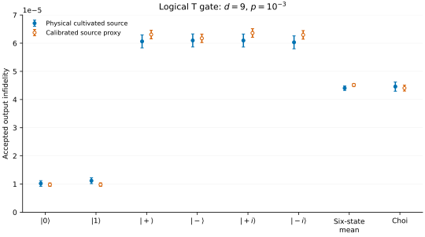

Logical T Gate¶
This tutorial shows how to compile and simulate a logical T gate with Bloq. The gate uses a cultivated T state and measurement-dependent basis selection.
Load and inspect the source¶
graph = bloq.GalleryItem.T_GATE.load()
graph.validate()
graph.save("t-gate.blog")
print(graph.to_text())
The data input and output are open Ports. The corrected joint measurement
mzz selects the resource’s final X or Y measurement.
flowchart LR source["T resource: cultivate until accepted"] --> merge["Joint logical measurement"] data["Data input"] --> merge merge --> bit["Corrected mzz"] --> cap["Select X/Y measurement"] merge --> output["Data output + Pauli frame"] cap --> output
See Actions for the selection rule and T State Cultivation for resource preparation.
Compile the dynamic IR¶
ir = bloq.compile(graph, distance=3)
ir.validate()
ir.save("t-gate.bloqir")
Path("t-gate.svg").write_text(ir.to_svg(include_classical=True), encoding="utf-8")
Part of the IR |
Behavior |
|---|---|
|
Retry cultivation on physical postselection failure or either observable’s decoder |
Selected measurement |
Execute the chosen X/Y arm and publish only its records |
Corrected observables and output frame |
Carry measurement results and Pauli corrections to the data output |
Only an accepted resource attempt exports results. Whole-program Stim emission cannot represent this adaptive protocol. A Clifford proxy replaces the T resource, so it does not simulate the T channel.
T-source Proxy¶
To speed up noisy simulation, replace the physical cultivation circuit with an ideal logical \(|T\rangle\) state, then apply a logical Z error with probability \(q\). Calibrate \(q\) from the infidelity of an accepted cultivated state, using the chosen distance, physical noise strength, and GAP thresholds from T State Cultivation.
Part |
Model |
|---|---|
Accepted T source |
Ideal \(\lvert T\rangle\) with a logical Z error of probability \(q\) |
Remaining gate circuit |
Physical circuit noise of strength \(p\) |
Source acceptance |
Account separately for the calibrated cultivation acceptance probability |
This proxy retains the non-Clifford T state. Compare it with physical-source simulations for the output metric of interest, as shown below. Matching accepted-state infidelity alone does not establish equality of the full noise channels.
Offline decoding and path-based postselection¶
For these noisy experiments, we do not yet have a fast dynamic simulator or a real-time decoder. Instead, simulate each measurement path as a fixed circuit, then decode its records offline. Keep a shot when the corrected measurement results select the path that was simulated. This reproduces adaptive basis selection through postselection.
Step |
Action |
|---|---|
Sample paths |
Run both X/Y measurement choices with the same number of attempts |
Decode records |
Use PyMatching to correct the branch selector and output Pauli frame |
Select shots |
Keep matching paths whose cultivation checks and source GAP thresholds pass |
Score outputs |
Apply the frame to the logical expectations and compute infidelity |
Combine paths |
Normalize each path’s accepted count and error sum by its attempted shots |
A path mismatch is a sampling filter, not a physical failure. For two equally sampled paths, effective attempts are half the total path shots. Average the six input-state infidelities equally, and report the Choi check separately.
Simulation¶
The noisy simulation tests six inputs (0, 1, +, -, +i, -i) and an
independent Choi check. It uses offline decoding and postselection, with ten
memory rounds before basis selection and ten before output.
Download the script and
the circuit bundle
into the same directory.
Use Python 3.12 or newer with the GAP-enabled PyMatching build:
uv add "clifft>=0.6,<1" "pymatching @ git+https://github.com/inmzhang/PyMatching.git@de4bb3e0796c1c9873d3ed5d1704364db10592cb"
uv run python tutorial_t_gate_simulation.py
The default uses 1,000 attempts per path to check the workflow. Increase
--shots to resolve the quoted rare-error rates. The script uses Clifft to
simulate the retained circuits.
"""Offline logical T characterization from the retained distance-9 circuits."""
import argparse
import hashlib
import json
import math
from zipfile import ZipFile
import clifft
import numpy as np
import pymatching
import stim
STATES = {
"zero": (0, 0, 1), "one": (0, 0, -1),
"plus": (1 / math.sqrt(2), 1 / math.sqrt(2), 0),
"minus": (-1 / math.sqrt(2), -1 / math.sqrt(2), 0),
"plus_i": (-1 / math.sqrt(2), 1 / math.sqrt(2), 0),
"minus_i": (1 / math.sqrt(2), -1 / math.sqrt(2), 0),
}
SOURCE_THRESHOLD = 11
BUNDLE_SHA256 = "0a78b01d4aba4dc62eb25a37a0c14fad7540cd1941b5df1e80a62e57a561a623"
def parity(rows, columns):
return np.bitwise_xor.reduce(rows[:, columns].astype(np.uint8), axis=1)
def conditioned(dem, postselection, *, whole_errors=False):
"""Exclude error mechanisms incompatible with passed physical checks."""
result = stim.DetectorErrorModel()
for instruction in dem.flattened():
if instruction.type != "error":
result.append(instruction)
continue
groups = instruction.target_groups()
rejected = [any(t.is_relative_detector_id() and t.val in postselection
for t in group) for group in groups]
if whole_errors:
if not any(rejected):
result.append(instruction)
else:
for group, reject in zip(groups, rejected, strict=True):
if not reject:
result.append("error", instruction.args_copy(), group)
if result.num_detectors < dem.num_detectors:
result.append("detector", [], [stim.target_relative_detector_id(dem.num_detectors - 1)])
return result
def close_source(companion, sheets, observables):
"""Use ideal boundary measurements to close the offline decoder model."""
records, paulis = {}, {}
for instruction in sheets:
observable = int(instruction.gate_args_copy()[0])
targets = instruction.targets_copy()
table = records if all(t.is_measurement_record_target for t in targets) else paulis
table[observable] = targets
if set(records) != set(observables) or set(paulis) != set(observables):
raise ValueError("source boundary sheets are incomplete")
targets = []
for observable in observables:
for index, target in enumerate(paulis[observable]):
if index:
targets.append(stim.target_combiner())
targets.append(target)
closed = companion.copy()
closed.append("MPP", targets)
for index, observable in enumerate(observables):
closed.append("DETECTOR", [
*(stim.target_rec(t.value - len(observables)) for t in records[observable]),
stim.target_rec(index - len(observables)),
])
return closed
def score(probes, spec, corrections, measurements, manifest, state):
frame_x = (parity(measurements, spec["frame_x_measurements"])
^ int(spec["frame_signs"][0])
^ corrections[:, manifest["terminal_observables"][1]])
frame_z = (parity(measurements, spec["frame_z_measurements"])
^ int(spec["frame_signs"][1])
^ corrections[:, manifest["terminal_observables"][0]])
frames = (np.column_stack([frame_x, frame_z, frame_x ^ frame_z,
frame_z, frame_x ^ frame_z]) if state == "choi"
else np.column_stack([frame_z, frame_x ^ frame_z, frame_x]))
corrected = probes * np.asarray(spec["exp_val_signs"]) * (1 - 2 * frames.astype(float))
if state == "choi":
zz, xx, xy, yx, yy = corrected.T
fidelity = (1 + zz + (xx + xy + yx - yy) / math.sqrt(2)) / 4
errors = 2 / 3 * (1 - fidelity)
else:
errors = (1 - corrected @ np.asarray(STATES[state])) / 2
if not np.all(np.isfinite(errors)) or np.any((errors < -1e-6) | (errors > 1 + 1e-6)):
raise ValueError("logical probes yielded invalid infidelity")
# These circuits have an exact rational error alphabet; remove roundoff only.
scale = 6 if state == "choi" else 4
exact = np.rint(errors * scale) / scale
if not np.allclose(errors, exact, atol=1e-6, rtol=0):
raise ValueError("logical probes left the exact error alphabet")
return exact
def simulate(archive, model, state, shots, seed):
directory = f"{model}_{state}/"
manifest = json.loads(archive.read(directory + "manifest.json"))
def read(name):
payload = archive.read(directory + name)
if hashlib.sha256(payload).hexdigest() != manifest["files"][name]:
raise ValueError(f"circuit hash mismatch: {directory}{name}")
return payload.decode("ascii")
# Verify the complete artifact, including boundary sheets and companions.
texts = {name: read(name) for name in manifest["files"]}
source = manifest["source"]
physical = model == "physical"
postselection = set(source.get("postselection_detectors", []))
gap_decoder = None
if physical:
closed = close_source(stim.Circuit(texts["source_decoder.stim"]),
stim.Circuit(texts["source_decoder_sheets.stim"]),
source["frontier_observables"])
dem = conditioned(closed.detector_error_model(decompose_errors=True), postselection)
gap_decoder = pymatching.GapDecoder(dem, observables=source["observables"],
enable_correlations=False)
accepted, total, square, attempted = 0, 0.0, 0.0, 0
paths = {}
for name, spec in manifest["paths"].items():
companion = stim.Circuit(texts[spec["decoder_file"]])
if companion.num_measurements != spec["virtual_measurements"]:
raise ValueError("decoder measurement count changed")
dem = companion.detector_error_model(decompose_errors=True)
dem = conditioned(dem, postselection, whole_errors=True)
matching = pymatching.Matching.from_detector_error_model(dem)
converter = companion.compile_m2d_converter()
options = {}
if physical:
options.update(postselection_mask=[int(i in postselection)
for i in range(spec["physical_num_detectors"])],
expected_detectors=list(map(int, source["detector_signs"])))
program = clifft.compile(texts[spec["physical_file"]], **options)
path_accepted, path_total, path_square = 0, 0.0, 0.0
for start in range(0, shots, 1024):
batch = min(1024, shots - start)
# Independent streams for each input, source model, path, and batch.
identity = f"{seed}:{directory}:{name}:{start}".encode("ascii")
batch_seed = int.from_bytes(hashlib.sha256(identity).digest()[:8], "little")
sample = clifft.sample_survivors(program, shots=batch,
seed=batch_seed, keep_records=True)
assert sample.total_shots == batch
assert len(sample.measurements) + sample.discards == batch
attempted += batch
measurements = sample.measurements
if not len(measurements):
continue
if physical:
boundary_values = sample.exp_vals[:, :spec["source_frontier"]]
if not np.allclose(np.abs(boundary_values), 1, atol=1e-6):
raise ValueError("source boundary is not stabilizer-valued")
boundary = np.rint((1 - boundary_values) / 2).astype(np.uint8)
end = spec["source_measurements"]
virtual = np.column_stack([measurements[:, :end], boundary, measurements[:, end:]])
frontier = np.column_stack([
parity(measurements, sheet["records"])
^ boundary[:, spec["source_eval_columns"][i]] ^ int(source["frontier_signs"][i])
for i, sheet in enumerate(source["frontier_sheets"])
])
syndromes = np.column_stack([sample.detectors, frontier]).astype(np.uint8)
_, _, _, gaps = gap_decoder.decode_batch_with_weights(syndromes)
keep = np.all(gaps >= SOURCE_THRESHOLD, axis=1)
else:
boundary_start = spec["source_boundary_start"]
projection_end = spec["source_projection_start"] + spec["source_projection_measurements"]
virtual = np.column_stack([
measurements[:, :projection_end],
measurements[:, boundary_start:boundary_start + spec["source_frontier"]],
measurements[:, spec["physical_prefix_measurements"]:],
])
keep = np.ones(len(measurements), dtype=bool)
assert virtual.shape == (len(measurements), spec["virtual_measurements"])
assert sample.exp_vals.shape[1] == spec["probe_count"] + (spec["source_frontier"] if physical else 0)
events = converter.convert(measurements=virtual.astype(bool), separate_observables=False)
corrections = matching.decode_batch(events)
selector = (parity(measurements, spec["selector_measurements"])
^ int(spec["selector_sign"]) ^ corrections[:, manifest["branch_observable"]])
keep &= selector == int(spec["selector_value"])
errors = score(sample.exp_vals[:, -spec["probe_count"]:], spec,
corrections, measurements, manifest, state)[keep]
assert len(errors) == np.count_nonzero(keep) <= len(measurements)
path_accepted += len(errors)
path_total += errors.sum()
path_square += np.square(errors).sum()
paths[name] = (path_accepted, path_total, path_square)
accepted += path_accepted
total += path_total
square += path_square
assert len(paths) == 2 and attempted == 2 * shots
assert accepted == sum(p[0] for p in paths.values())
mean = total / accepted if accepted else math.nan
variance = max(0, square - total * mean) / (accepted - 1) if accepted > 1 else math.nan
standard_error = math.sqrt(variance / accepted) if accepted else math.nan
# Each path accepts its own selector value; two exposures represent one attempt.
acceptance = accepted / (attempted / 2)
if not physical:
acceptance *= source["acceptance_probability"]
return mean, standard_error, acceptance
def main():
parser = argparse.ArgumentParser(description=__doc__)
parser.add_argument("--circuits", default="t-gate-characterization-d9.zip")
parser.add_argument("--shots", type=int, default=1000, help="attempts per path and input")
args = parser.parse_args()
if args.shots <= 0:
parser.error("--shots must be positive")
with open(args.circuits, "rb") as file:
if hashlib.file_digest(file, "sha256").hexdigest() != BUNDLE_SHA256:
parser.error("--circuits must be the retained distance-9 circuit bundle")
clifft.set_num_threads(1)
print("model,input,source-and-gate acceptance,infidelity,nominal 95% half-width")
with ZipFile(args.circuits) as archive:
for model in ["physical", "t_proxy"]:
means, variances = [], []
for index, state in enumerate([*STATES, "choi"]):
mean, error, acceptance = simulate(archive, model, state, args.shots,
seed=7 + 100000 * index)
print(f"{model},{state},{acceptance:.6g},{mean:.6g},{1.96 * error:.6g}")
if state != "choi":
means.append(mean)
variances.append(error ** 2)
print(f"{model},six-state mean,,{np.mean(means):.6g},"
f"{1.96 * math.sqrt(sum(variances)) / 6:.6g}")
if __name__ == "__main__":
main()

Continue with 8T-1CCZ Distillation Factory for a larger adaptive resource protocol, or Emulate Hardware Synchronization for a THTH example with explicit timing and protected waits.